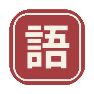

Kosakata Jepang
Catat, simpan, dan hafalkan — tersimpan otomatis di HP kamu
Catatan
ノート
Latihan
練習
0
total kata
0
sudah hafal
0
perlu diulang
+ Tambah kosakata baru
Kanji / Kana
Hiragana (cara baca)
Romaji
Arti (Indonesia)
Contoh kalimat (opsional)
Simpan kosakata
📥 Muat starter pack (kosakata sehari-hari s.d. N4)
Mode: Flashcard
Mode: Ketik jawaban
Acak
Tampilkan: Kanji → tebak arti
Tampilkan: Arti → tebak kanji
Tampilkan: Hiragana → tebak romaji
Tampilkan: Hiragana → ketik arti (Indonesia)
Tampilkan: Arti → ketik hiragana
0 / 0
SOAL
—
tap kartu untuk buka jawaban
Belum hafal
Sudah hafal
SOAL
—
Cek jawaban
Lanjut →